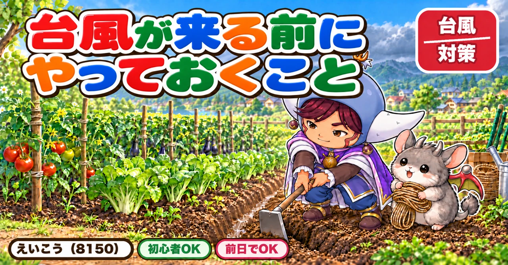
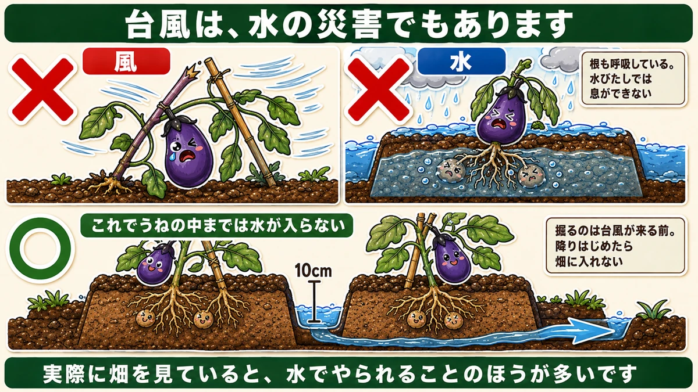
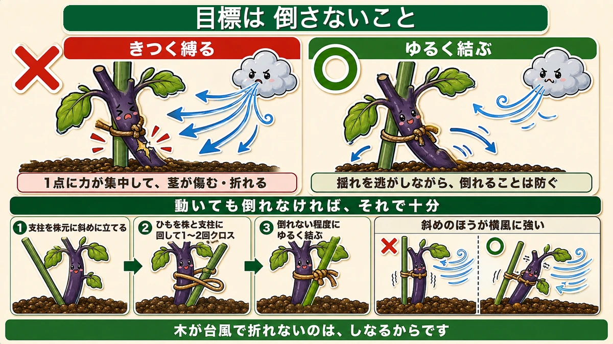
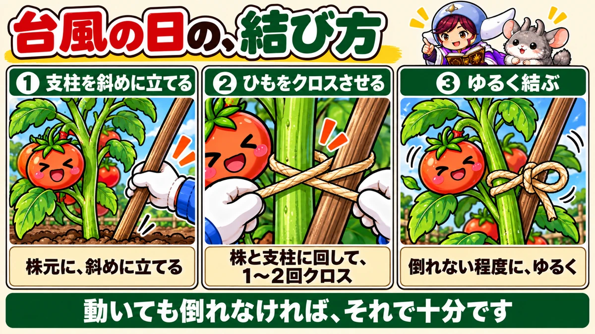
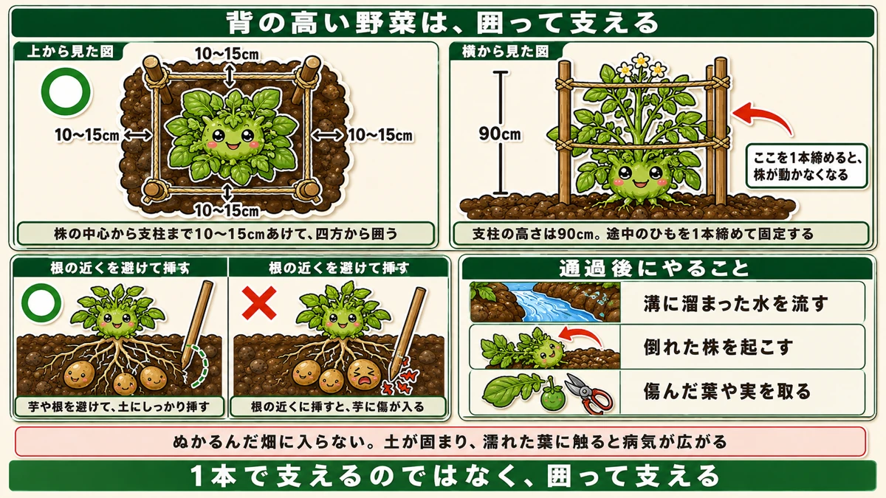
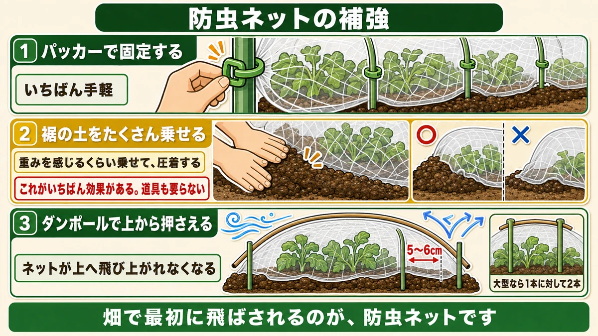

家庭菜園の台風対策｜接近前の点検と被害後の立て直し手順

どうも、8150（えいこう）です🌱 家庭菜園歴8年、理科の教員免許を持っていて、有機・無農薬で野菜を育てています。
📖 この記事の目次
この記事で分かること
- 接近前は『水の出口』『株と支柱のつなぎ目』『ネットの端』を先に点検します。
- 茎を縛る輪と、支柱同士を結ぶひもは別の役割。植物を締め付けず、骨組みのぐらつきを減らします。
- 背丈や枝の広がりに合わせて、一本ずつ支える方法と、周囲を囲う方法を使い分けます。
- 収穫できるトマトは雨風の前に取り、ほかの野菜まで未熟なうちに一律収穫しません。
- 通過後は倒れた株だけでなく、露出した根、残った水、土に触れた葉を見ます。
- 折れた株を残すかは、傷の状態と株の勢いで判断。補修したら、その後の変化まで確認します。
台風の予報を見ると、畑のあれもこれも気になりますよね。支柱を増やす？ ネットを外す？ 実を全部取る？ ここで作業を一緒くたにすると、必要な場所を見落としやすくなります。
まず『風で壊れそうなところ』と『雨で水が残りそうなところ』を分けてください。一本のトマトでも、茎の結び目は大丈夫なのに、支柱の足元がぐらついていることがあります。ネットが無事でも、うね間には水が居座ることがあります。見る相手が違うんですね。
このページは、接近前の点検から通過後の立て直しまでを、必要なところから引けるようにまとめています。初めて備えるみなさんは『早見』と『作業の手順』へ。すでに被害があるなら『失敗の見分け方』からどうぞ。畑に行くこと自体が危険な状況では、作業を始めないでください。野菜のために人が無理をする順番にはしません。

早見：台風対策（ひと目で分かる数字と判断）
数字は、対象の野菜とセットで読む
- 点検の開始：予報で接近が見込まれた段階から。『必ず前日の何時まで』という全国共通の締め切りは置きません。天候が荒れてから追加作業へ出ない段取りにします。
- うね間の排水溝：約10cmの深さを使う対策例があります。深さだけで浸水を防げる保証はなく、水の行き先まで確認するのがセットです。
- 秋じゃがいものうね：長雨や台風を見込んだ植え付け準備で、20cm以上の高さを取る説明があります。生育途中の全野菜を急にこの高さへ変える指示ではありません。
- 秋じゃがいもの囲い：長さ90cmの支柱を4本、株から10〜15cmほど離して立てる実演があります。ただし、芋や根の位置が優先。距離を守れば地下部に当たらないとは限りません。
- トマトの誘引：通年の管理では15〜20cmごと、強風への備えでは約30cmごとという説明があります。平均値を新しい基準にせず、支えられていない部分を確認します。
- トマトの合掌支柱：長さ210cmの支柱を使い、土へ20〜30cmほど差し込む施工例があります。使う支柱や土の状態で安定性は変わります。
- オクラの囲い：長さ150〜200cmの支柱を用意する説明があります。株の背丈と、地中へ入れる分を考えて選びます。
- オクラの囲いひも：生長に合わせて2〜3段へ増やす説明があります。約20cm間隔の例もありますが、葉や茎を押しつぶさない配置を先に見ます。
- ネギを支える高さ：葉の中央より少し上で左右から受ける説明があります。低すぎる位置、先端だけの位置とは支え方が違います。
- トンネルの骨組み：約50cm間隔の設置例があり、風が強い場所では間隔を詰める考え方もあります。間隔だけを耐風性能の証明にはしません。
- 補修したトマトの観察：約1週間後、傷より上が枯れていないかを見る方法があります。その日が来れば必ず接合するという意味ではありません。
- 台風前の収穫：食べ頃になったトマトを優先。すべての野菜に通用する未熟収穫の日数や熟度は、ここでは設定しません。
ここには置かない数字
予報の風速だけを見て『この値より低ければ作業できる』『この支柱なら必ず耐える』と決める基準はありません。同じ畑でも、周囲の建物、風の抜け方、株の大きさ、雨で緩んだ地面によって様子が変わります。風速の数字から、畑仕事へ出る許可を作らないでください。
種まきの適期、株間、元肥、追肥、収穫までの日数、連作を避ける間隔は、栽培する野菜ごとの情報です。台風対策だからと共通値を当てはめると、例えばトマトと秋じゃがいもの計画が混ざってしまいます。新しく植えるときは、種袋や苗の表示にある地域別の時期を確認してから、このページの風雨対策を重ねます。
普段の管理を変える数字と、今ある設備を調べる数字も分けましょう。うねの高さは植え付け前に決める内容。結び目の状態は、すでに育っている株でも確認できる内容です。接近直前に、大がかりな土の作り直しまで始める必要はありません。
栽培場所で変わる点検項目
『庭』『貸し農園』『プランター』では、確かめる水の出口が違います。地植えなら通路とうね間のつながりを見ます。共同の畑なら、自分の区画だけで水を押し出してよいとは限りません。決められた排水先を確認しておくと、作業が迷子になりにくいです。
プランターには、地植えの10cmの溝や20cmのうねをそのまま当てはめません。容器の排水口と置き場所、支柱を含めた全体の安定性が点検の入口です。地植え用の施工例を、鉢の土へ深く支柱を差す指示に読み替えないようにします。
- 数字が何の野菜・設備の話か確認した
- 水の出口と通路を確認した
- 支柱の長さだけでなく、足元と結び目も見ることにした
- 株の背丈に合う支え方を選んだ
- 雨風が荒れる前に終えられる範囲へ作業を絞った
目安を全部そろえるより、まず『自分の畑のどこが弱そうか』が分かればOKです。数字はそこを確かめるために使いましょう☺️
作業の手順（時期の順）
1．予報が出たら、作業を場所ごとに分ける
- これから種をまく場所、育っている株、収穫が近い株を分けて見ます。
- 株の状態とは別に、支柱、トンネル、雨よけなどの設備を確認します。
- 雨のあとに水が残りやすかった場所を思い出し、出口を点検する候補にします。
- 作業量を絞り、荒天になる前に片づけまで終える段取りを組みます。
手を付ける順番は『目立つ株から』だけでは決めません。高いオクラが気になっても、その下の通路が水をためる形なら排水も必要です。背の低い白菜でも、植えたばかりで根付いていなければ、風に振られる問題があります。
新しい種まきは、予定日だからと押し切らず、強い雨の予報を確認します。雨が水やりの代わりになることと、種が流れず発芽できることは別。植え付けの適期に余裕があるなら、強風や大雨を避ける日程を考えましょう。
2．排水は、溝の終点から点検する
- うね間や通路の水が、どこへ流れる形になっているか見ます。
- 水の通り道をふさいでいる土や障害物がないか確かめます。
- 栽培中の根をむやみに掘り返さず、通路側に水の経路を整えます。
- 約10cmの溝の例を参考に、低い場所へ水を集めるだけで終わっていないか確認します。
溝を掘っても、その先が閉じていれば、水を置く場所が一つ増えるだけです。大切なのは、株のある場所に水が長く残らない形。深さを測ったら、次は出口を見てください。
秋じゃがいもをこれから植える場合は、うねを高くする準備と通路の排水を一緒に考えます。すでに育っている株の近くへ、同じつもりで大きな溝を掘るのは別作業です。地下には根も芋もあるので、『排水のため』という理由だけで株元を掘らないようにします。
水の逃げ道を区画の外へつなぐ場合は、隣の区画や施設の決まりも確認してください。自分の株の水を減らして、ほかの場所へ被害を移す形では困りますよね。共同の畑は、使ってよい経路を先に把握しておくと安心です。
3．支柱の足元と接合部を調べる
- 支柱が地面の中でぐらついていないか確認します。
- 横に渡した支柱や斜めの補強があれば、接合部の緩みを見ます。
- 根を傷つけない位置で、必要な差し込みや補強を行います。
- 設備が安定してから、植物を支えるひもへ進みます。
株を結ぶひもだけ締め直しても、支柱そのものが倒れるなら支えになりません。雨で地面が緩んだあとには、普段は安定していた足元も変わります。前回の台風で大丈夫だった設備も、今回の点検を省く理由にはならないんですね。
トマトを合掌式に支える場合は、向かい合う支柱、横の支柱、斜めに入れる筋交いを組み合わせる方法があります。筋交いは、骨組みが横へ変形するのを抑えるための斜めの支えです。斜めの棒を添えるだけで終えず、支柱同士が交わるところを結びます。
長い支柱を使えば全部解決、ではありません。地中へ入る分と、地上で支える高さを分けて見ます。小苗用の斜め支柱と、大きなトマト全体の骨組みは、役割も必要な大きさも違います。
4．苗は、茎に余裕を残して支える
- 茎の近くで支えが必要な位置を選びます。
- 小苗には、根を避けて斜めの支柱を添える方法を使います。
- ひもを茎と支柱へ回し、茎に食い込まない輪を作ります。
- 支柱側の結びが滑らず、苗の倒れ込みを受け止められるか確認します。
誘引というのは、植物を支柱やネットへ導いて支えることです。茎を棒に押し付ける作業ではありません。輪を作ったら、茎が押しつぶされていないか、ひもの線が深く入っていないかを見ましょう。
『ゆるく』が気になって、今度は輪を大きくしすぎることもあります。支えが届かず土へ倒れるなら、位置や長さを調整します。締める強さだけを変えるより、株をどの位置で受けるかを見直すと考えやすいです。
ブロッコリーやカリフラワーのように、葉と茎が上へ育つ苗は点検の対象にします。キャベツも、大きい苗がぐらつく、葉が地面へ触れるなどの条件なら支えを検討。野菜名だけで『必要』『不要』を決めないでください。


5．トマトは、上と横に伸びた部分を拾う
- 下から上へ、茎が支えから離れている区間を探します。
- 最後に結んだ位置より先に、新しく伸びた部分がないか見ます。
- 横へ広がる枝があれば、その枝に合う方向の支えを用意します。
- 結び目を追加したあと、実や枝の重みが一か所へ偏っていないか確認します。
15〜20cmごとに支える説明も、約30cmごとの説明もあります。どちらを採るにしても、伸びた先を長く宙に置いたままにしないことが共通の点検項目です。ひもの数を数えて安心するより、ひもとひもの間で茎がどんな形になっているかを見ます。
二本に分かれたトマトなら、両側へ支柱を設け、それぞれの茎を違う支えに誘引する方法もあります。分かれた枝を一本の支柱へ無理に集めると、向きの違いが結び目へ集中します。今ある株の枝分かれに合わせて受ける位置を増やしましょう。
すでに折れかけた茎を、台風前の点検と同じ調子で強く引き戻さないでください。傷がある株は、後半の『失敗の見分け方』で、傾きと折れを分けて判断します。
6．オクラや芋類は、株の周囲から受ける
- 株の広がりと、支柱を置ける通路の余裕を見ます。
- 周りへ支柱を立て、茎や葉が囲いの内側に入るよう配置します。
- 周囲へひもを張り、背丈に合わせて支える段を追加します。
- 株の一部だけが囲いの外へ大きく出ていないか調べます。
オクラは収穫を続けるうちに背丈が伸びます。低い時期の一段だけでずっと対応しようとすると、上の部分に受け止める場所がありません。2〜3段に増やす説明は、この生長への対応として読みましょう。
囲いにひもを張るときは、支柱側で滑らないよう固定します。囲いの中を区切るひもを足す方法もありますが、茎そのものを強く束ねる意味ではありません。外枠が安定することと、茎を締め付けることを混ぜないのがコツです。
秋じゃがいもは、90cmの支柱4本で周囲を支える例があります。株から10〜15cmほど離す数字だけを守っても、芋のある場所へ刺してしまえば傷を作ります。支柱の位置は、土寄せした範囲や地下部の広がりを考えて決めてください。
里芋には、左右へ横支柱を渡して挟むように支える方法もあります。広い葉と大きい株を、細いひも一本ですべて受けるつもりにしないことがポイントです。じゃがいもの囲いの寸法を、そのまま里芋へ流用しません。

7．ネギや生姜は、倒れる方向を支える
- 列の左右へ株が倒れ込みそうな場所を確認します。
- ネギは両側からひもで受ける方法を検討します。
- 葉の中央より少し上を目安に、ひもの高さを合わせます。
- 生姜は普段の土寄せと、必要なひもの補助を分けて考えます。
ネギを足元だけで囲っても、上の長い葉を十分に受けられない場合があります。先端だけにひもを掛けても、葉が折れ曲がってしまうことがあります。株全体のどの高さが倒れ込みを受けやすいかを見てください。
生姜は密集した株が互いに支え合う条件と、少ない株数で育てる条件とで説明が変わります。少数栽培ではひもによる補助も考えます。『隣の株があるから倒れない』と保証するのではなく、支えが足りない側がないかを確かめる使い方です。
8．防虫トンネルは、骨組み・端・上面を順に調べる
- トンネルの支柱が傾いていないか見ます。
- ネットを骨組みに留める部分が外れていないか確認します。
- 裾へ乗せた土が減っているところや、開いた隙間を直します。
- 必要に応じて、上から受ける補助の支柱を加えます。
ネットを留めるパッカーは、骨組みへ固定するための留め具です。留め具があることと、全体が固定されていることは別。支柱の足元やネットの裾が浮いていれば、そこから持ち上がる余地が残ります。
防虫のために隙間を閉じる土と、持ち上がりを抑えるための土の重みは、同じ場所でも目的が少し違います。台風への備えでは、裾が軽くふわっと乗っているだけになっていないか確認し、土を足して押さえる方法があります。水の通り道まで塞がないよう、排水側も合わせて見ます。
上押さえには、トンネル用の細い支柱であるダンポールを追加する方法があります。既存の骨組みの外側から、ネットの上面を受ける考え方です。追加支柱を何cm離すかは、ネットの張り方や風の強さで変わるので一律指定しません。ネットが破れるほど押し込み、株へぶつける形にもしたくないですね。
『3段階』の図は、留め具、裾、上面という点検場所を覚えるためにも使えます。全部施工すれば無被害になるという図ではありません。

9．つる用ネットと雨よけは、別々に点検する
- つるを絡ませたネットは、上側の固定とたるみを確認します。
- 支柱ごと傾く場所があれば、骨組みの補強へ戻ります。
- 雨よけは、覆いのばたつきと留めた場所の傷みを見ます。
- 使っている設備の扱いに合わせて補強し、種類の違うネットの手順を混ぜません。
防虫ネットは株を外から覆うもの。つる用ネットは植物自身の重さを受けるもの。雨よけの覆いは雨を遮るものです。どれも『ネットみたいなもの』でまとめると、上面を押さえる方法だけで対応できる気がしてしまいます。
きゅうりなどのつるが絡むネットを、一律に外す指示はここにはありません。雨よけも、付けておけば必ず守れる、外せば必ず安全という共通判断にはしません。接近直前に設備を大きく変更するより、普段から扱い方と固定場所を把握しておきましょう。
10．収穫できる実を取り、片づけて終える
- トマトの実を見て、収穫できるものを先に取ります。
- ほかの野菜も普段の収穫適期を確認します。
- 使い終わったひもや外した留め具を回収します。
- 地面を覆うマルチの端や、作業で緩めた場所を見直します。
トマトは熟した実を雨の前に収穫することで、実が割れる被害を避ける考え方があります。台風が近いという理由だけで、青い実も含めて一つ残らず取る話へ広げないでください。
オクラの適期収穫は普段から行う管理です。大きく残すと硬くなり、次の実の育ちにも影響します。でも『普段から早めに取る』と『台風前に未熟な実まで取る』は別です。かぼちゃやトウモロコシへも、トマトの判断をそのまま移しません。
補強が終わったら、道具と切ったひもの回収まで済ませます。資材は野菜を支える一方、外れてしまえば畑の外へ動く物でもあります。最後に通路を一周する点検を、作業の終わりに入れておくと見落としを拾いやすいですよ。
11．通過後は、入れる状態を確認してから見回る
- 周囲と足元を確認し、無理に立ち入らず見られる範囲から調べます。
- 水の残り方と、倒れた設備の位置を先に確認します。
- 株ごとに『傾き』『茎の折れ』『根の露出』を分けます。
- 症状に合わせて、排水、支え直し、補修の検討へ進みます。
通過したというだけで、畑も通路も元通りとは限りません。ぬかるんだ場所へ踏み込んで、倒れた株を引き起こすことだけを急がないでください。水が残る場所を確認する作業と、その中へ入って土を動かす作業は分けます。
補強してあった株も見ます。見た目は立っていても、ひもがずれて茎へ食い込む、葉が土に触れる、支柱の根元だけ緩む、といった変化があります。被害は『倒れたかどうか』だけで数えません。
12．復旧のあとに、次の風への弱点を直す
- 支柱や留め具が外れた場所を記録します。
- 株が大きくなって支えを超えていないか確認します。
- 補修した部分より上の葉を、時間を置いて見直します。
- 栽培を終える株は、病気の部分と資材を分けて片づけます。
とりあえず立った株を、そのまま以前の結び方へ戻すだけでは、同じところでまた外れることがあります。支柱が倒れたのか、ひもが外れたのか、茎が折れたのかを残しておくと、次に増やすべき支えが分かります。
復旧の目的は、台風前と同じ形へ戻すことだけではありません。これから収穫を続けられる株には支えを整える。栽培終盤で弱り、折れた株には終了の選択も持つ。状態に合わせて予定を変えて大丈夫です。
失敗の見分け方（症状→原因→やること）
最初に見るのは『どこが動いたか』です。植物、ひも、支柱、地面。ここを分けると、全部に同じ手当てをしなくて済みます。病名が分からなくても、傷や水の状態は確認できます。
支柱と株が、一緒に斜めになっている
- 症状：株だけでなく、支える棒も傾いています。
- 考えられる原因：地中の固定が緩んだ、接合部が外れた、骨組み全体が風に押された可能性があります。
- やること：植物を縛る強さを増す前に、足元と支柱同士のつなぎ目を見直します。
茎の輪は無事なのに設備が倒れたなら、輪の締め付けを変えても原因へ届きません。根を避けて支柱を安定させ、必要な横支えや筋交いを検討します。茎が傷んでいる場合は、設備の復旧と植物の処置を分けて進めてください。
支柱は立っているのに、茎が土へ倒れている
- 症状：支柱から株が離れ、葉や実が地面へ触れています。
- 考えられる原因：ひもが外れた、輪の位置がずれた、伸びた枝が支えから離れていた可能性があります。
- やること：茎に折れがないかを先に確認し、傷を増やさない範囲で支えを整えます。
倒れたナスを支え直して、次の風に備える考え方があります。ただし、倒れているからといって全株が同じ状態ではありません。根が切れたか、茎が裂けたかは別の確認です。強く引けば直ると考えず、ひもの位置と支えの方向を見ます。
土へ接した葉や実には、接触した場所の傷みがないかも確認します。起こした瞬間に作業完了にせず、そのあと斑点や枯れが増えないかを観察しましょう。
ひもの位置に、くびれや擦れた跡がある
- 症状：結び目の周辺だけ茎が細く見える、表面が傷ついている状態です。
- 考えられる原因：輪がきつい、茎の肥大で余裕が減った、風で同じ場所が擦れたことが考えられます。
- やること：支えを維持しながら、食い込むひもを調整します。傷の位置を避けて支える方法も検討します。
台風用だからと強く縛るほど、守ったつもりの部分が傷みやすくなります。逆に輪を外して放置すると、支えを失うこともあります。茎への圧迫を減らすことと、倒れ込みを受けることを同時に考えましょう。
トマトの茎が折れ、皮の一部だけつながっている
- 症状：傷より上が垂れ、茎の中が見えている状態です。
- 考えられる原因：支えのない部分が振られた、枝や実の重さが偏った、強風で曲げられた可能性があります。
- やること：株に勢いが残るか、上部の枯れが進んでいるかを見て、補修を試すか終了するか選びます。
補修を試す方法では、折れた部分を元の位置へ合わせ、テープと割り箸などの添え木でずれを抑えます。そのうえで別の支柱を添え、補修部分が再び大きく揺れないよう支えます。雨で剥がれにくい布製テープを使う説明がありますが、資材を巻けば元どおりになる保証はありません。
普段の誘引は、茎へ締め付けを加えないためのもの。添え木は、傷のある接合部を動かしすぎないためのものです。目的が違うので、補修部を支える話を健康な茎の輪の締め方へ移さないでください。
約1週間後に、傷より上の葉が枯れていないかを見る方法があります。枯れた場合にはその部分を切り、下に健全な脇芽が残っていれば育て直す選択もあります。脇芽の有無も株ごとの条件です。終盤で弱ったトマトなら、無理に補修を続けず撤去を選ぶ考え方も持ちましょう。
株元の土が流れ、根が見えている
- 症状：根の一部が露出し、株元にすき間がある、株が傾いている状態です。
- 考えられる原因：雨水で土が流れた、倒れるときに根元が持ち上がった可能性があります。
- やること：根の露出を確認し、作業できる状態になってから株元を整えます。
茎の角度だけを直しても、根元に空洞が残れば株は安定しません。露出した場所と、地中に残る部分を分けて見てください。根を何度も引っ張りながら起こす方法や、『何時間以内なら必ず助かる』という期限は設定しません。
根の傷みは地上から全部見えるわけではありません。立て直したあとも、葉のしおれが戻るか、新しい葉が伸びるかを観察します。支柱を足した事実と、根が回復した事実は別です。
うね間の水が、雨のあとも残っている
- 症状：通路や溝に水が残り、株元の土も湿ったままです。
- 考えられる原因：出口が詰まる、途中で水がせき止められる、水の抜けにくい場所へ集まることが考えられます。
- やること：安全に見られるところから水の経路を確認し、排水先の詰まりを見直します。
溝を深くすることだけに集中せず、どこで流れが止まるかを探します。うねの上まで水が来たか、通路だけに残っているかでも状態が違います。次回のためには、水が最後まで残る場所を記録すると役立ちます。
土は湿っているのに、葉がしおれている
- 症状：水不足に見える葉の垂れが、雨のあとにも続きます。
- 考えられる原因：過湿で根の働きが落ちた、風で根が傷んだ、茎に損傷があるなど複数の可能性があります。
- やること：水を足す前に、土の湿り、茎の傷、根元のぐらつきを確認します。
しおれは『もっと水を』の合図だけではありません。水が十分あっても、根がうまく働かなければ吸い上げられません。土の水分と葉の様子が食い違うときほど、灌水を自動で追加しないようにします。
この症状だけで病名までは決まりません。台風で倒れたという事実も、過湿が続いたという事実も、原因を絞る手掛かりとして残します。追肥を足して様子を見ようとする前に、水と傷を調べる順番です。
ネットの一部が浮く、上面がたるむ
- 症状：端がめくれる、留め具が外れる、骨組みの間へネットが落ち込む状態です。
- 考えられる原因：裾の固定不足、接合部の緩み、骨組みの変形などが考えられます。
- やること：端だけを戻さず、支柱から裾まで点検し直します。
つる用ネットのたるみなら、植物の重さを受ける固定も見ます。防虫トンネルの隙間なら、虫が入れる状態になっていないか確認します。破れと固定の外れは処置が違うので、どちらなのかを見てから戻しましょう。
泥の付いた下葉に、斑点や枯れが増える
- 症状：地面に近い葉や、倒れて土へ触れた葉から傷みが目立ちます。
- 考えられる原因：泥はね、土への接触、長く湿る条件が関わる可能性があります。
- やること：傷んだ葉を確認し、晴れ間など作業しやすいときに整理します。排水の不調も一緒に見ます。
台風後の葉の傷をすべて同じ病気と決めつけません。擦れや裂けなどの物理的な傷もあります。健全な葉まで一斉に取り去るより、どの葉がどんな状態かを選んで見る方が、株の働きを残せます。
玉ねぎの葉の病気が広がり、成熟を待ちにくい
- 症状：通過後に葉の傷みが広がり、通常の収穫予定まで残すのが難しい状態です。
- 考えられる原因：強風と大雨のあとに病気が広がった可能性があります。自然に葉が倒れる収穫期の変化とは区別します。
- やること：病気の広がりを確認し、成熟を待たず収穫へ切り替える選択を検討します。
べと病が広がった玉ねぎで、玉の大きさにかかわらず収穫する説明があります。『台風に遭った玉ねぎは全株すぐ抜く』という意味ではありません。健康な株の通常収穫と、病気が広がった畑の緊急収穫を分けます。
収穫後の葉や根を、病気の出た場所へ残さない考え方もあります。来作も同じ場所で玉ねぎを育てるかは、病気の履歴を含めて見直します。年数だけをここで一律に決めることはしません。
説明が分かれていること
違う説明を見つけたときは、先に『何を育てているか』『いつの作業か』『何を防ぎたいか』を合わせます。数字の違いだけを取り出すと、本来は別の条件だった話が、正解争いに見えてしまいます。
台風前の種まきは避けるか、雨を利用するか
- Aという説明：強風や大雨が予想されるときの種まきは、うまくいかないおそれがあるため予報を確認します。
- Bという説明：翌日の台風の雨を見込み、水やりを雨に任せて種まきを進めた栽培例があります。
- どう考えればよいか：雨で土が湿ったことと、発芽や収穫まで成功したことを分けます。
Bの例で確認できるのは、翌朝に地面が濡れたことです。その先の発芽や収量まで、成功例としては扱えません。雨を利用する予定を立てること自体と、強い雨でも種を守れることも別。初めての場所で水の流れが分からないなら、予報を見て日程を調整する入口が考えやすいです。
台風が来るから土が湿る、という一点だけで播種を決めると、風、泥はね、土の流失の確認が抜けます。時期をずらすなら、種袋の適期に収まるかも確認してください。
トマトは15〜20cmごとか、約30cmごとか
- Aという説明：本支柱へ切り替えたあとの通年管理では、15〜20cmほどの間隔で誘引します。
- Bという説明：強風の被害を防ぐ点検では、約30cm間隔で誘引する目安があります。
- どう考えればよいか：間隔は15〜30cmの範囲にある説明として残し、株と支えの状態を合わせて読みます。
中間の数字を計算して『この間隔が正解』にすると、どちらにもなかった方法を作ることになります。株の時期や仕立て方が同じとは限らないため、まず茎がどこで支えられ、どこが宙に出ているかを見ましょう。
短い間隔で結んでいても、上に伸びた先端が支えを離れていれば点検が必要です。約30cmの例を採っていても、横へ張った枝に受ける場所がなければ別の補助が要ります。数字は点検の助けであり、点検の代わりではありません。
囲いのひもは、麻でなければいけないか
- Aという説明：日差しで傷んだビニールの破片が土に残ることを気にして、麻ひもを選ぶ考え方があります。
- Bという説明：合掌支柱の施工ではビニールひもも選択肢とし、ネギの囲いではロープなども使える説明があります。
- どう考えればよいか：材質だけで可否を決めず、傷み、固定のしやすさ、使用後の回収を確認します。
麻ひもにも、使っているうちに傷むという点検は必要です。『土へ落ちても分解する素材だから、切れたままでいい』という扱いにはしません。支えとして役立つ状態を保ち、不要になったものは回収する。この手順は材質が違っても残ります。
同じ材質のひもでも、太さや劣化の具合が違えば同じ支えとは言えません。新品の種類を選ぶだけでなく、今張ってあるひもがまだ使えるかを見ることが先です。
キャベツにも支柱を立てるべきか
- Aという説明：秋冬の管理で、キャベツは支柱が必要ない場合もあるとする説明があります。
- Bという説明：大きい苗や生長した苗が倒れそうなら、早めに支える説明があります。
- どう考えればよいか：苗の大きさ、根付き、ぐらつき、葉と地面の距離を確認します。
『キャベツは低いから不要』と決めると、植えたばかりの大苗を見落とします。『台風だから全株に必要』と決めると、安定した株の地下部へ新しい支柱を差す作業まで増えます。今の株に、何を支える必要があるのかから判断しましょう。
土寄せで倒れにくくする考え方もありますが、普段の栽培で行う作業と、ぬかるんだ土を台風後に急いで動かす作業は同じではありません。
ネットの裾は、埋めるか開けておくか
- Aという説明：白菜などの防虫では、外から虫が入る隙間を閉じるために裾へ土を掛けます。台風への補強では、その部分に重みを加えます。
- Bという説明：冬のニンニクの防風・防寒では、裾を埋めなくてもよいという説明があります。
- どう考えればよいか：防虫、冬の風よけ、台風時の固定を別の目的として扱います。
冬のニンニクの例を見て、秋の白菜の防虫トンネルも開けてよいとは限りません。虫の侵入を防ぎたいなら、隙間を閉じる役割が残ります。台風に備えるなら、冬の軽い覆いの例をそのまま固定の十分条件にしません。
素材の違いも見ます。風を通しやすい防虫ネットと、風を遮る覆いでは、同じ形でも受け方が違います。『ネット』という名前だけをそろえて、施工方法を入れ替えないでください。
折れたトマトは、補修するか栽培を終えるか
- Aという説明：皮の一部がつながる株で、添え木を使った補修を試す方法があります。
- Bという説明：収穫終盤で弱った株では、回復に負担が掛かるため撤去を選ぶ説明があります。
- どう考えればよいか：傷のつながりだけでなく、株の勢いと今後の栽培期間を確認します。
皮が残っているという条件が同じでも、元気に伸びる株と、葉の枯れが進んだ株では見込みが違います。補修を選ぶなら、傷より上の葉の状態をあとから確認。終了を選ぶなら、残った資材を回収し、次の植え付けの準備へ進みます。
残せるかどうかを、野菜への愛情の量で決めなくて大丈夫です。状態を見て方針を変えることも管理の一つ。なんか全部助けたくなるけど、ここは株の都合を見てあげたいですね。
補強すれば、被害は出ないと考えてよいか
- Aという説明：ネットを土で押さえる実演などでは、強く固定できることを強調した説明があります。
- Bという説明：以前は耐えた支えが外れ、補強していた野菜が倒れた実例もあります。
- どう考えればよいか：別の施工の話を直接の比較にせず、対策を無被害の保証にも変えません。
土で裾を押さえるネットと、誘引で支えたナスは違う設備です。片方の被害から、もう片方の補強が無意味とまでは言えません。ただし、どの方法も対象と条件があることは忘れないようにします。
備えは、弱いところを減らすためのもの。予報の強さに対応できる保証書ではありません。前回の成功や、ひもを増やした本数だけで安心せず、通過後も実際の状態を確認します。
よくある質問
時間が少ないときは、どこから見ればよいですか
水の出口、ぐらつく支柱、支えから離れた茎、ネットの浮いた端を優先して確認します。
すべてを新しく作り直すより、今ある弱点を直す順番です。荒れた天候の中で作業を延長する計画にはしません。
うね間を10cm掘れば、それだけで大丈夫ですか
約10cmは排水溝の一例で、浸水しないことを保証する数字ではありません。
水の行き先が閉じていれば溝にも水が残ります。深さと出口をセットで点検してください。
株をひもで動かないように縛る方が安心ですか
茎へ食い込む締め付けは避けます。倒れ込みを支えつつ、茎を圧迫しない余裕を残しましょう。
支柱同士の固定と、茎を支える輪は別です。骨組みの結び方を植物へそのまま使いません。
支柱を斜めにしたら、どんな株でも強くなりますか
小苗へ添える斜め支柱と、大きな設備の筋交いは違う方法です。
角度だけでは安定性は決まりません。地中の固定、接合部、株が支えに届く位置も調べます。
支柱は長ければ長いほどよいですか
株を受ける高さと、土へ差し込む分が足りるかを見ます。長さだけで耐風性を判断しません。
芋類では地下部を傷つけない位置も必要です。背の高いオクラ用の長さを、小苗へ一律に使う必要はありません。
防虫ネットは、台風前に外すべきですか
すべての防虫ネットを外すという共通の手順は、ここでは示していません。
骨組み、留め具、裾を確認し、使用中の設備に合う扱いをします。外した場合の虫対策も別に残ります。
きゅうりが絡んだネットも同じ補強でよいですか
つる用ネットは植物の重さを受けるので、防虫トンネルとは点検場所が違います。
上の固定、たるみ、支柱の安定性を確認してください。覆いの裾へ土を掛ける方法だけでは代わりになりません。
ネットの上へ追加する支柱は、何cm離しますか
決まった距離の目安は見つからなかったため、ここでは確定値を置きません。
既存の骨組みの外側から上面を受ける考え方として使い、株やネットを傷つける位置を避けます。
麻ひもなら、切れたあとも放置してよいですか
不要なひもは回収します。分解しやすい材質という話と、支えの点検を省いてよいという話は別です。
使っているひもの傷みや緩みを確認し、資材の種類にかかわらず役割を保ちましょう。
トマトは青い実まで全部取りますか
接近前の収穫は、収穫できる状態の実を先に取る考え方です。
未熟な実を一律に取る基準にはしていません。熟した実を残すことで起きる雨による割れなどを減らします。
オクラやかぼちゃも、早く取った方がよいですか
オクラは普段から適期に取り、硬くなるまで残さない管理を続けます。
かぼちゃなどの未熟収穫の判断をトマトと同じにする根拠はありません。野菜ごとの収穫適期と台風対策を分けます。
倒れた野菜は、すぐ引き起こせば助かりますか
傾きだけか、茎が折れたか、根が傷んだかで状態が違います。まず傷を見てください。
起こせたことだけで回復を判定しません。支え直したあとのしおれや新しい葉の変化も確認します。
トマトの補修は、どの野菜にも使えますか
トマトで説明されている添え木の方法を、全野菜の回復保証へ広げません。
つながっている部分、株の勢い、傷より上の枯れを見ます。終盤の弱い株では終了も選択肢です。
約1週間たてば、補修部分は治ったと考えてよいですか
約1週間は上部が枯れていないかを見る観察の目安です。
その日数が接合を保証するわけではありません。元気な葉が残るか、その後も傷が広がらないかを見直します。
雨がたくさん降ったのに、どうしてしおれるのですか
過湿で根が働きにくい場合や、風で根や茎が傷んだ場合があります。
土が湿っているなら、水を足す前に排水と損傷を確認しましょう。葉の垂れだけで水不足と決めません。
倒れにくい品種なら、補強はいりませんか
倒れにくさは事前の品種選びの材料ですが、無被害を約束する性質ではありません。
種袋で地域の適期を確認し、栽培中は実際の背丈、根元、支えの状態を点検します。
地這いきゅうりなら、台風対策は不要ですか
高いネットへ這わせる栽培に比べ、風への不安を減らす選択肢として紹介されています。
ただし排水や収穫のしやすさは別の課題です。今あるつるを急に地面へ下ろす指示としては使いません。
海の近くで葉が傷んだら、水で洗えばよいですか
葉の傷だけから塩害と決めつけず、風の擦れや過湿なども分けて確認する必要があります。
塩分を洗い流す量や回数は、このページでは示しません。塩害が疑われる場合は、地域の栽培相談先などで状況を伝えて確かめてください。
外から流れ込んだ水に触れた実は、食べられますか
このページの栽培上の復旧手順では、食品としての安全性を判定できません。
葉や茎が元気になったことと、収穫物を食べられることは別です。見た目だけで安全とは言い切らないでください。
畑から飛んだ資材は、自分で全部回収しますか
自分の区画で安全に拾えるものと、危険な場所へ移動したものを分けます。
電柱や電線に掛かった資材の回収方法は、このページの対象外です。無理に触らず、関係する管理先へ状況を伝えてください。
学ぶ：風と水が野菜に与える影響🔬
まとめ
麻ひも
きつく縛らないこと。動いても倒れなければ十分です。
![[商品価格に関しましては、リンクが作成された時点と現時点で情報が変更されている場合がございます。]](https://hbb.afl.rakuten.co.jp/hgb/56bc2b48.a5f55627.56bc2b49.c4ff0d7c/?me_id=1372205&item_id=10005292&pc=https%3A%2F%2Fthumbnail.image.rakuten.co.jp%2F%400_mall%2Faudiofuntech%2Fcabinet%2Fproducts%2Fetc%2Fetc06%2F7052-1.jpg%3F_ex%3D240x240&s=240x240&t=picttext "[商品価格に関しましては、リンクが作成された時点と現時点で情報が変更されている場合がございます。]")

支柱150cm
背の高い野菜は四方を囲います。1本足しておくだけで違います。
![[商品価格に関しましては、リンクが作成された時点と現時点で情報が変更されている場合がございます。]](https://hbb.afl.rakuten.co.jp/hgb/56d221a0.da732c49.56d221a1.b57a6709/?me_id=1230952&item_id=10017113&pc=https%3A%2F%2Fthumbnail.image.rakuten.co.jp%2F%400_mall%2Fnou-nou%2Fcabinet%2F5010356000109-01.jpg%3F_ex%3D240x240&s=240x240&t=picttext "[商品価格に関しましては、リンクが作成された時点と現時点で情報が変更されている場合がございます。]")
マルチ押さえピン
ネットとマルチの裾を留めます。めくれた瞬間に飛びます。

防虫ネット
補強は3段階。裾を留め、上から押さえ、それでも危なければ外します。